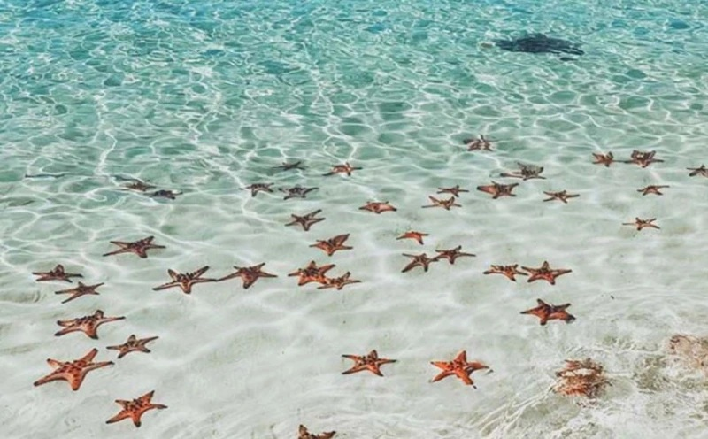
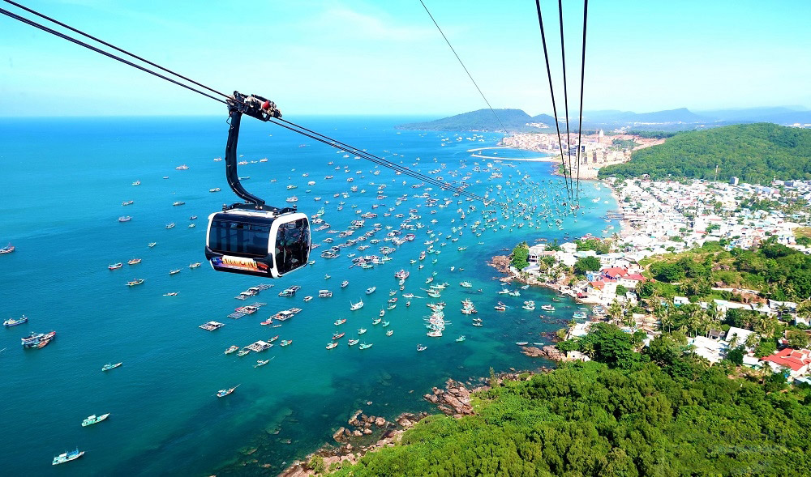
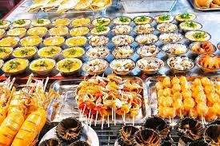
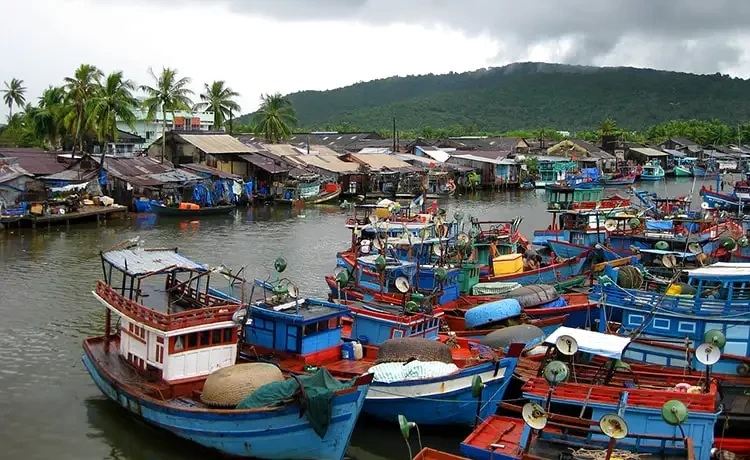
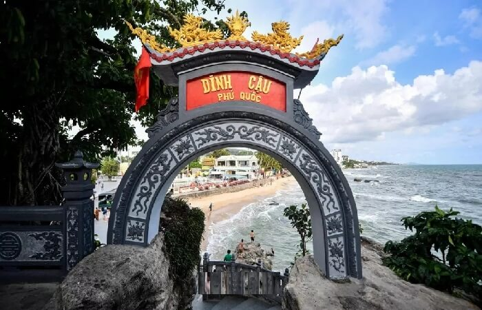
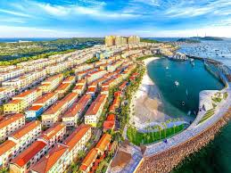
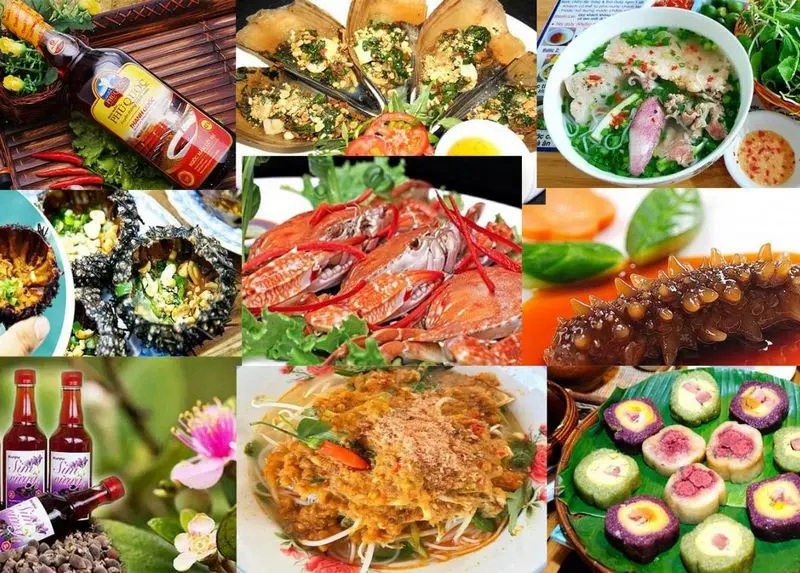
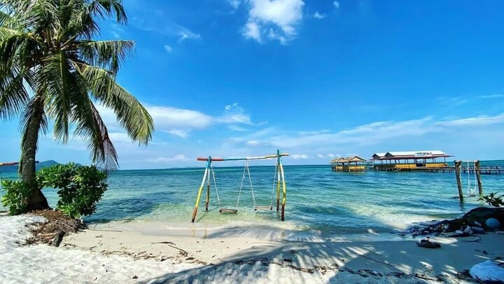

Giới Thiệu Tour
Phú Quốc được mệnh danh là đảo ngọc của Việt Nam, nổi tiếng với biển xanh trong, bãi cát trắng mịn, những khu nghỉ dưỡng đẹp và không khí biển đảo thư giãn.
Tour Phú Quốc Đảo Ngọc 4 ngày 3 đêm đưa du khách khám phá Bãi Sao, Hòn Thơm, chợ đêm Phú Quốc, làng chài Hàm Ninh, Dinh Cậu, Sunset Town và thưởng thức hải sản tươi ngon.
Điểm Nổi Bật

Bãi Sao
Tận hưởng bãi cát trắng mịn, nước biển trong xanh và không gian yên bình.

Hòn Thơm
Trải nghiệm cáp treo vượt biển và vui chơi tại khu giải trí nổi tiếng.

Chợ Đêm Phú Quốc
Thưởng thức hải sản, đồ ăn vặt và mua đặc sản địa phương về làm quà.

Làng Chài Hàm Ninh
Khám phá đời sống ngư dân và thưởng thức hải sản tươi bên biển.

Dinh Cậu
Điểm check-in tâm linh nổi tiếng, đẹp nhất khi hoàng hôn buông xuống.

Sunset Town
Không gian kiến trúc Địa Trung Hải rực rỡ, nhiều góc ảnh đẹp bên biển.

Ẩm Thực Đảo Ngọc
Thưởng thức ghẹ Hàm Ninh, gỏi cá trích, bún quậy và hải sản tươi ngon.

Góc Check-in Biển Đảo
Nhiều góc chụp đẹp với biển xanh, resort, cầu gỗ và hoàng hôn rực rỡ.
Lịch Trình Chi Tiết
Ngày 1 — Khởi Hành Đến Phú Quốc
08:00 — Đón khách tại sân bay hoặc điểm hẹn tại Phú Quốc.
10:00 — Di chuyển về khách sạn, gửi hành lý và nghỉ ngơi.
11:30 — Dùng bữa trưa với các món đặc sản đảo ngọc.
14:00 — Tham quan Dinh Cậu và check-in khu vực trung tâm.
17:00 — Ngắm hoàng hôn bên biển.
19:00 — Tự do khám phá chợ đêm Phú Quốc.
Ngày 2 — Khám Phá Nam Đảo
07:30 — Ăn sáng tại khách sạn.
08:30 — Khởi hành tham quan Bãi Sao.
10:30 — Tắm biển, chụp ảnh và nghỉ dưỡng bên bãi cát trắng.
12:00 — Ăn trưa tại nhà hàng địa phương.
14:00 — Trải nghiệm cáp treo Hòn Thơm hoặc vui chơi tại khu giải trí.
18:30 — Ăn tối, tự do dạo biển hoặc nghỉ ngơi tại resort.
Ngày 3 — Làng Chài Và Sunset Town
07:30 — Ăn sáng tại khách sạn.
09:00 — Tham quan làng chài Hàm Ninh, tìm hiểu đời sống ngư dân.
11:30 — Dùng bữa trưa với hải sản tươi ngon.
14:30 — Check-in Sunset Town với kiến trúc Địa Trung Hải.
17:30 — Ngắm hoàng hôn, chụp ảnh bên biển.
19:00 — Ăn tối và tự do khám phá Phú Quốc về đêm.
Ngày 4 — Tạm Biệt Đảo Ngọc
07:30 — Ăn sáng, làm thủ tục trả phòng.
09:00 — Mua đặc sản Phú Quốc như nước mắm, hồ tiêu, hải sản khô.
11:00 — Ăn trưa nhẹ trước khi ra sân bay hoặc điểm đón.
13:00 — Xe đưa khách ra sân bay, kết thúc tour.
Bảng Giá Tour
| Đối Tượng | Giá / Người | Ghi Chú |
|---|---|---|
| Người lớn | 6.800.000 ₫ | Bao gồm xe đưa đón, khách sạn, bữa ăn và tham quan theo lịch trình. |
| Trẻ em 5–11 tuổi | 4.900.000 ₫ | Có ghế ngồi riêng, ngủ chung phòng với người lớn. |
| Trẻ em dưới 5 tuổi | Miễn phí | Ngồi cùng người lớn, chưa bao gồm chi phí phát sinh riêng. |
| Phụ thu phòng đơn | +900.000 ₫ | Áp dụng khi khách muốn ở một mình một phòng. |
Giá đã gồm: xe du lịch, khách sạn, bữa ăn theo chương trình, hướng dẫn viên, bảo hiểm và vé tham quan cơ bản.
Đánh Giá Khách Hàng
4.9 / 5 ★★★★★
168 đánh giá từ khách đã tham gia tour.
Trần Mai Linh
Resort sạch, lịch trình thoải mái, có nhiều thời gian nghỉ ngơi và chụp ảnh.
Lê Quốc Bảo
Hải sản tươi, hướng dẫn viên nhiệt tình, tour rất hợp cho gia đình đi nghỉ dưỡng.
Nguyễn Hải Nam
Phú Quốc rất đẹp, biển trong và đồ ăn ngon. Mình thích nhất Bãi Sao và Sunset Town.